Sensational Spider-Man Vol 2 (2006 - 2007)
| Comic Book | Release Date | Cover |
|---|---|---|
| Sensational Spider-Man Vol 2 #23 Feral Part 1 of 5: Cold-Blooded |  | |
| Sensational Spider-Man Vol 2 #24 Feral Part 2 of 5: Cat Scratch Fever | 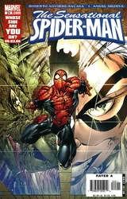 | |
| Sensational Spider-Man Vol 2 #25 Feral Part 3 of 5: Hunter's Moon | 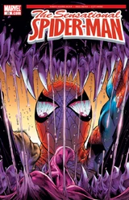 | |
| Sensational Spider-Man Vol 2 #26 Feral Part 4 of 5: The Beasts Within | 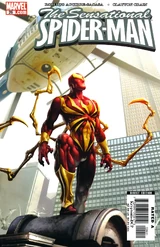 | |
| Sensational Spider-Man Vol 2 #27 Feral Conclusion: The Rock of Life | 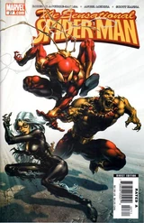 | |
| Sensational Spider-Man Vol 2 #28 My science teacher is Spider-Man!! | 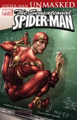 | |
| Sensational Spider-Man Vol 2 #29 The Deadly Foes of Peter Parker, Part 1 of 3 | 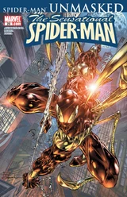 | |
| Sensational Spider-Man Vol 2 #30 The Deadly Foes of Peter Parker, Part 2 of 3 | 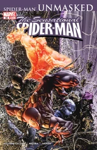 | |
| Sensational Spider-Man Vol 2 #31 The Deadly Foes of Peter Parker: Part Three of Three | 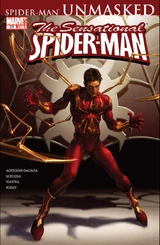 | |
| Sensational Spider-Man Vol 2 #32 The Husband or the Spider? | 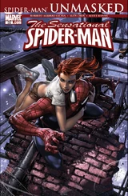 | |
| Sensational Spider-Man Vol 2 #33 Wounds | 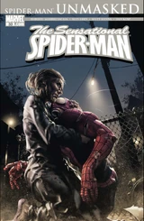 | |
| Sensational Spider-Man Vol 2 #34 Nothing Can Stop the Rhino | 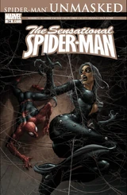 | |
| Sensational Spider-Man Vol 2 #35 The Strange Case of...: Part One of Three | 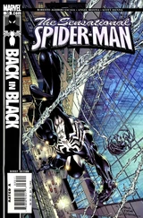 | |
| Sensational Spider-Man Vol 2 #36 The strange case of...: Part 2 of 3 | 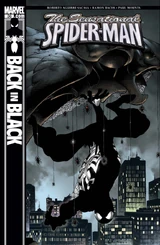 | |
| Sensational Spider-Man Vol 2 #37 The strange case of...: Conclusion | 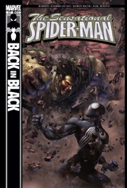 | |
| Sensational Spider-Man Vol 2 #38 The Last Temptation of Eddie Brock: Part 1 of 2 | 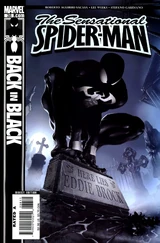 | |
| Sensational Spider-Man Vol 2 #39 The Last Temptation of Eddie Brock: Part 2 of 2 | 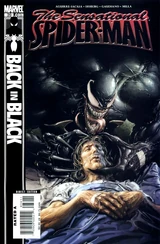 | |
| Sensational Spider-Man Vol 2 #40 The Book of Peter | 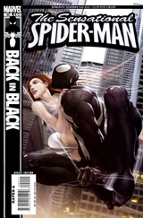 | |
| Sensational Spider-Man Vol 2 #41 Spider-Man: One More Day, Part 3 | 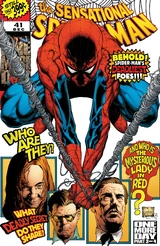 |